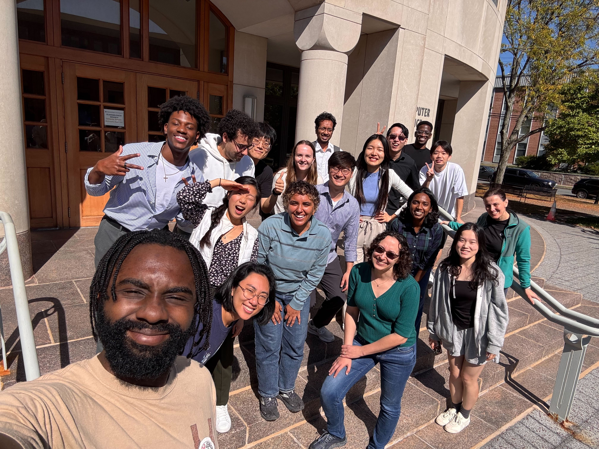

We work on developing artificially intelligent systems
that are able to reason about the visual world. Our research brings together the fields of
computer vision,
machine learning,
human-computer interaction,
cognitive science, as well as
fairness, accountability, and
transparency.
We are interested in a diverse range of topics, including building computer vision systems, understanding the
underlying learning paradigms, studying how computer vision systems can effectively collaborate with humans,
and ensuring the fairness of the vision systems with respect to people of all backgrounds by
improving dataset design, algorithmic methodology, measurement metrics and model interpretability.
RECENT TIMELINE
-
arXiv 2025Ye Zhu, Yu Wu, Duo Xu, et al.
-
"Beyond Objects: Contextual Synthetic Data Generation for Fine-Grained Classification" preprint out.arXiv 2025William Yang, Xindi Wu, Zhiwei Deng, et al.
-
arXiv 2025Allison Chen, Sunnie S. Y. Kim, Angel Franyutti, et al.
-
arXiv 2025Nobline Yoo, Olga Russakovsky, Ye Zhu
-
arXiv 2025Asher J. Hancock, Xindi Wu, Lihan Zha, et al.
-
Advances in Neural Information Processing Systems 2025 , Datasets and Benchmarks TrackAmaya Dharmasiri, William Yang, Polina Kirichenko, et al.
-
"Dynamic Diffusion Schrodinger Bridge in Astrophysical Observational Inversions" accepted.Advances in Neural Information Processing Systems 2025Ye Zhu, Duo Xu, Zhiwei Deng, et al.
-
arXiv 2025Huili Chen, Stephen R. Grimm, Olga Russakovsky, et al.
-
-
International Conference on Computer Vision 2025Ruoyu Wang, Huayang Huang, Ye Zhu, et al.
-
arXiv 2025Xindi Wu*, Hee Seung Hwang*, Polina Kirichenko, et al. (* = equal contribution)
-
Sunnie S. Y. Kim, Jennifer Wortman Vaughan, Q. Vera Liao, Tania Lombrozo, Olga Russakovsky
-
-
CVPR 2025Yongqi Yang, Zhihao Qian, Ye Zhu, et al.
-
Computer Vision and Pattern Recognition 2025Aaron Serianni, Tyler Zhu, Olga Russakovsky, et al.
-
ACM Conference on Human Factors in Computing Systems 2025 , Extended Abstract TrackAllison Chen, Sunnie S. Y. Kim, Amaya Dharmasiri, et al. To additionally appear in the Proceedings of CogSci 2025
-
"Interactivity x Explainability: Toward Understanding How Interactivity Can Improve Computer Vision Explanations" accepted.ACM Conference on Human Factors in Computing Systems 2025 , Extended Abstract TrackIndu Panigrahi, Sunnie S. Y. Kim*, Amna Liaqat*, et al. (* = equal contribution)
-
Salma Abdel Magid
-
CHI 2025Sunnie S. Y. Kim, Jennifer Wortman Vaughan, Q. Vera Liao, et al.
-
-
ICML 2025Jihoon Chung*, Tyler Zhu*, Max Gonzalez Saez-Diez, et al.
-
arXiv 2024Xindi Wu, Mengzhou Xia, Rulin Shao, et al.


ACKNOWLEDGEMENTS
We are very grateful to the National Science Foundation, Amazon, Adobe, Open Philanthropy, Meta, Princeton School of Engineering and Applied Sciences, Princeton Alliance for Collaborative Research and Innovation, Princeton Language and Intelligence Initiative and Princeton Precision Health Initiative (current/ongoing) as well as to KAUST, Samsung, Google, Microsoft, Cisco and Princeton Center for Statistics and Machine Learning (past) for generous support of our research.